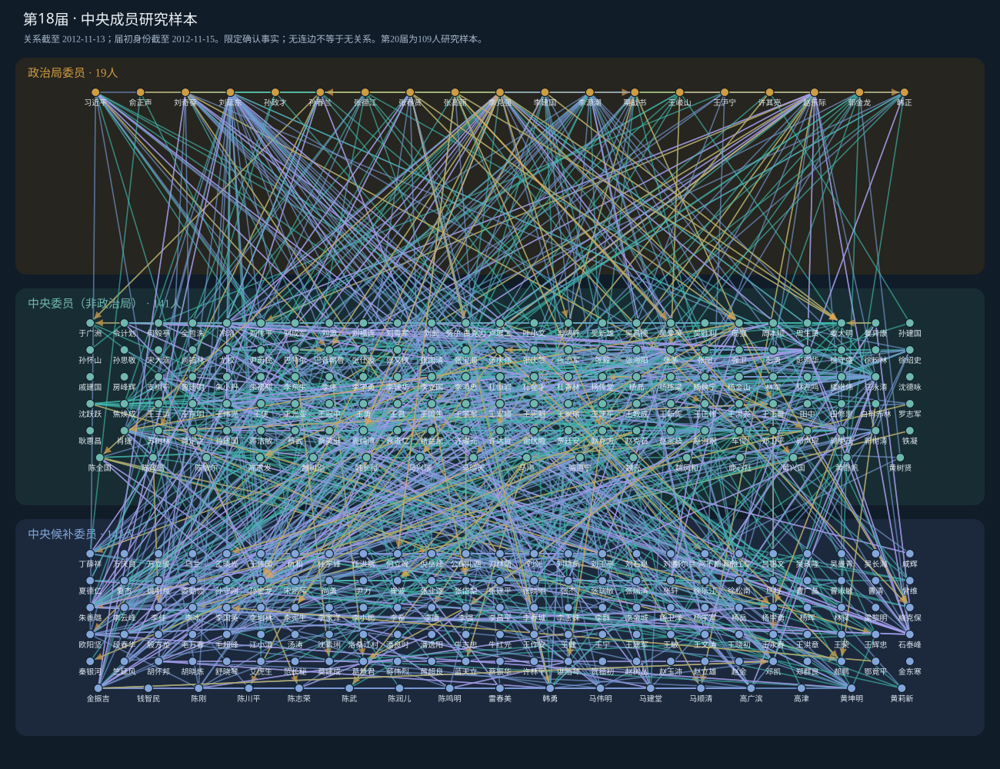

共事 · 1,486条
同一具体机构或有证据的领导班子，任职时间确定重叠。同省不同单位不自动连边。
身份决定所在层，经历与证据决定是否连边。展示15—20届既有研究样本中的历史共事、直接上下级及校友联系。
打开六届交互网络 ↗下载数据与项目文档数据冻结：2026-10-16 · 发布整理：2026-10-20 · 静态网页，无外部脚本
regression_ready=false。上层政治局委员（含常委），中层非政治局的正式中央委员，下层中央候补委员。每人每届只显示一次，层内及层间都允许连边。孤立节点保留。
同一具体机构或有证据的领导班子，任职时间确定重叠。同省不同单位不自动连边。
同期存在有证据的直接组织领导关系。箭头上级→下级，不能凭职级或所在层推断。
普通高校学历教育，同校且在校时间确定重叠。普通高校在职学历单独标记。
普通高校学历教育，同校、不要求同期。排除党校、军校、短训、访问、博士后及名誉学位。
同期校友包含在一般校友中；各类边不能直接相加得到唯一联系人。历史联系不证明持续交往或私人亲密关系。

主图只使用该届中央委员会选举前一日已经形成的历史关系，按届初最终身份分层。关系截止日期与身份日期分别记录。
| 届次 | 节点 | 确认边 | 关系截至 | 身份截至 |
|---|---|---|---|---|
| 第15届 | 268 | 466 | 1997-09-17 | 1997-09-19 |
| 第16届 | 272 | 600 | 2002-11-13 | 2002-11-15 |
| 第17届 | 295 | 862 | 2007-10-20 | 2007-10-22 |
| 第18届 | 302 | 1,172 | 2012-11-13 | 2012-11-15 |
| 第19届 | 296 | 1,172 | 2017-10-23 | 2017-10-25 |
| 第20届 | 109 | 227 | 2022-10-21 | 2022-10-23 |
节点为既有研究名单，非完整中央成员普查。本发布包采用CC主截面；完整本地研究档案另含PB选举分析截面。
先确认人物，再对齐机构、职务及教育事件。优先采用事件原始正式文件，再参考官方履历、院校记录和可靠原始报道，百科辅助。双方经历确认并满足时间条件后才连边。
单方未提及可作为互补，须核对人物与事件。真实冲突保留原值和来源；未决事实不入网。年月差不超过六个月只用于差异分级，不扩大任期、不补造月份。
冻结库确认事实范围12,826条，其中9,095条具备本轮连边输入条件，覆盖839人。另50人保留节点。资料缺失不编码为现实没有关系；0只表示已记录确认联系人为0。
后来发生的经历不得回填。图上当届最终身份服务描述，不能直接用来解释当届晋升。前期身份指标仍须结合依据、缺失与覆盖标记审查。
本次发布整理复用2026-10-16冻结成果，不新增来源核实。原版本验收包括112项语义反例、12个CC/PB截点指标复算、29组CSV/Stata回读、24个GraphML回读和17份受保护输入散列检查。网页公开证据摘录及原网站链接；未决及排除候选另随Excel归档，完整网页缓存和原始输入保留在本地研究档案。
Excel中的“全部经历”和严格网络为确认范围。“基本信息”和“人物届次”仍保留有标记的报告值或候选，未决及排除信息另表归档，不能并入确认网络。
本包不包含CPED省市数据库，不提供全研究采集与裁定流水线。第三方原始材料保留其原权利，项目未代替研究者指定开放许可证。
《第15—20届中央成员三层关系网络：基于已确认事实的限定范围研究样本》，数据冻结2026-10-16，发布整理2026-10-20。正式引用时补充项目负责人、仓库网址和访问日期；引用具体事实时同时引用原始来源。